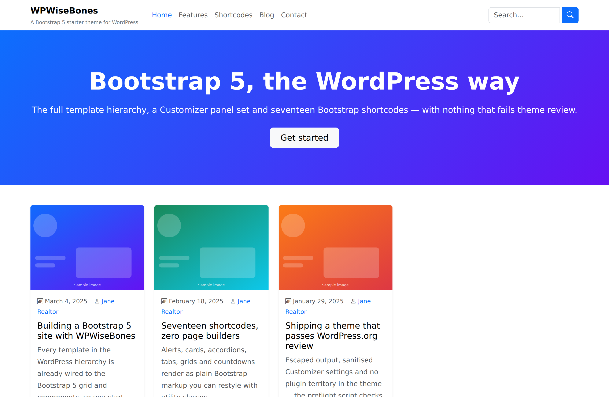
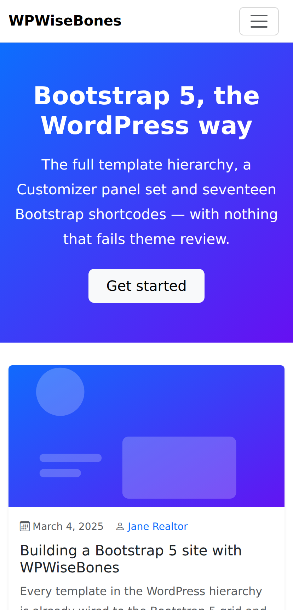

The WPWiseBones theme
Version 1.0.13 · text domain and folder wpwisebones · functions are prefixed
wpwisebones_, CSS and HTML classes wpb-. Requires WordPress 6.0 and PHP 7.4.

index.php, header.php,
template-parts/header/hero.php and template-parts/content/content-post.php.
See the whole page.{kind=link}
Install
Upload wpwisebones.zip under Appearance → Themes → Add New → Upload Theme, then activate.
On activation the dashboard gets a Getting Started panel that reports whether the companion
shortcodes plugin is installed and links to it when it isn't.
Template hierarchy
The theme covers the classic hierarchy — no fallback to index.php for the common cases.
| File | Handles |
|---|---|
index.php | Fallback and blog listing; hero on the front page |
home.php | Posts page when a static front page is set |
front-page.php | Provided by the child themes (RealWise, AEC Forge) |
singular.php · single.php · page.php | Single post, single page, generic singular |
archive.php · category.php · tag.php · taxonomy.php | Archive views |
author.php · date.php | Author and date archives |
search.php · searchform.php | Results page and the Bootstrap search form |
attachment.php · 404.php · comments.php | Media, not-found and comment list |
sidebar.php · header.php · footer.php | Shared chrome |
page-templates/full-width.php | “Full Width” — page with no sidebar |
page-templates/landing.php | “Landing Page” — no header/footer navigation |
Content markup lives in template-parts/content/ (content-post.php,
content-page.php, content-single.php, content-search.php,
content-none.php) and the hero in template-parts/header/hero.php, so a child theme
can replace one piece without copying a whole template.
Customizer
All settings live under a single WPWiseBones panel with seven sections and 25 settings.
Every add_setting() call has a sanitize_callback.
| Section | Settings | Transport |
|---|---|---|
| Header Settings | Sticky header, light/dark navbar, top bar toggle and text | refresh |
| Layout | Default layout (right sidebar, left sidebar, full width), container width (fixed 1320 px or fluid) | refresh |
| Hero / Banner | Heading, sub-heading, button text and URL | postMessage |
| Footer Settings | Copyright text, widget columns, back-to-top button | refresh |
| Brand Colours | Primary, secondary, accent, header and footer background | postMessage |
| Typography | Google Font for body and headings, base font size | refresh / postMessage |
| Social Links | Facebook, Twitter/X, Instagram, LinkedIn, YouTube, GitHub, Pinterest, TikTok | refresh |
Selective-refresh partials are registered for the site title, tagline, logo, hero and footer copyright, so those update in place rather than reloading the preview.
Theme options page
Appearance → Theme Options holds the switches that aren't design decisions.
Behaviour and content
Preloader · smooth scroll · back-to-top · breadcrumbs · author box on singles · related posts · reading time · social share buttons · posts per page · excerpt word count · copyright text · custom CSS · custom JS (head) · custom JS (footer).
Trim what you don't use
Disable emojis · disable oEmbeds · disable XML-RPC · remove version query strings · defer non-essential scripts.
Layout and per-post meta boxes
The global sidebar position comes from the Customizer, and each post or page can override it. The meta
box adds a layout override (default, right sidebar, left sidebar, full width), a hero image and hero text
for that entry, and a hide-title switch. wpwisebones_get_layout(), wpwisebones_has_sidebar() and
wpwisebones_content_class() resolve the two together, so templates just ask for the answer.
Widgets and widget areas
Three widgets
Recent Posts (with thumbnails), Social Links and CTA Banner — registered classes, so they appear in the block widget editor as legacy widgets.
Nine areas
Primary Sidebar · Footer Column 1–4 · Shop Sidebar · Header Widget Area · Before Content · After Content.
The header area is a graceful fallback: when nothing is assigned to it, the header renders the search form instead.
Menu locations
Four locations are registered — primary, footer, topbar and
mobile. The primary menu renders through WPWISEBONES_Bootstrap_Nav_Walker, which
emits Bootstrap 5 navbar markup with dropdown support.
Block editor
theme.json (v2) defines a nine-colour palette matching the Bootstrap contextual colours,
six font sizes, content and wide layout widths, and turns off the default WordPress palette and gradients.
On top of that the theme registers:
- 7 block styles — Button: Outline, Pill · Image: Rounded, Shadow · Quote: Bordered · Group: Card · List: Checkmarks
- 3 block patterns — Hero Section, Two-Column Features, Call to Action
- Four image sizes —
wpwisebones-card(400×250),-hero(1920×600),-square(400×400),-wide(1200×400)
SEO output
inc/seo.php prints Open Graph tags, a Twitter Card and Schema.org JSON-LD. It backs off
automatically when Yoast SEO, Rank Math or All in One SEO is active, so you never get two sets of tags.
Canonical URLs are left to WordPress core.
WooCommerce
inc/woocommerce.php declares support, wraps shop templates in the theme's Bootstrap
container, swaps in the dedicated Shop Sidebar and restyles store notices as Bootstrap alerts.
AJAX endpoints
| Action | Purpose |
|---|---|
wpwisebones_load_more | Appends the next page of posts to an archive without a reload |
wpwisebones_live_search | Returns matching posts as you type in the header search |
Both are registered for logged-in and logged-out visitors and are nonce-checked; the front end gets the
nonce and endpoints through the wpwisebonesData object localised onto the theme's main script.
Assets
Bootstrap 5.3.3 and Bootstrap Icons 1.11.3 are served from assets/vendor/ — local files, no
CDN request, which is what WordPress.org's guidelines expect. npm run sync re-copies them from
node_modules/ after a dependency bump. The icon webfont is pointed at the bundled
.woff2/.woff through an inline @font-face rule.
On a phone
